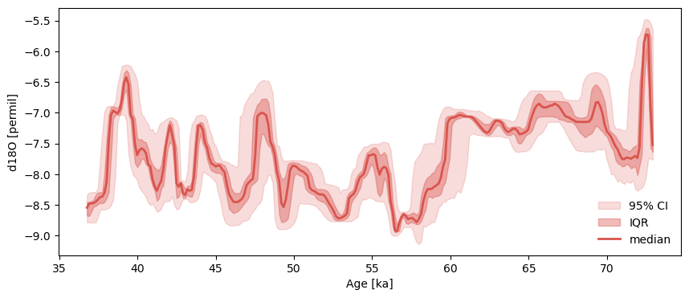
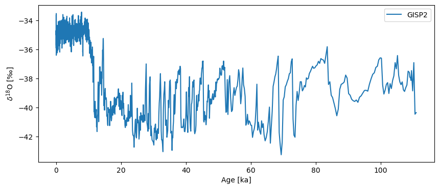
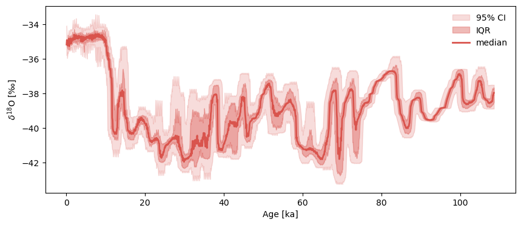
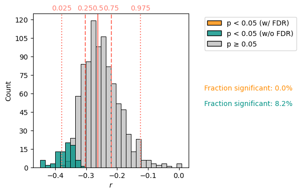
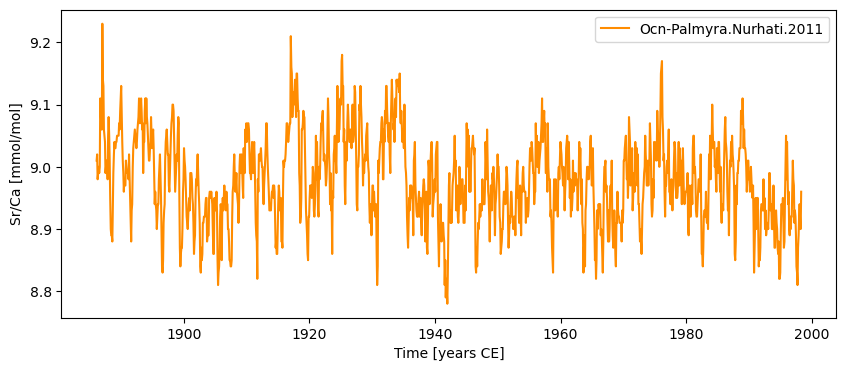
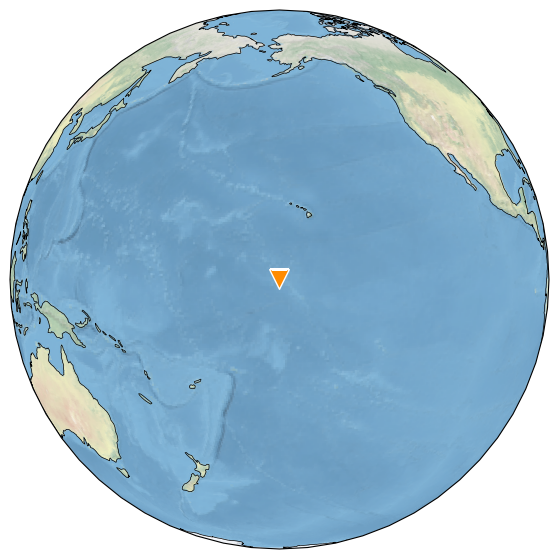
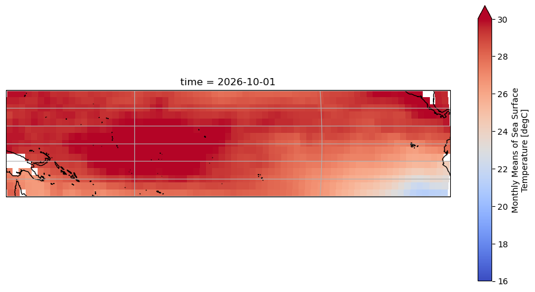
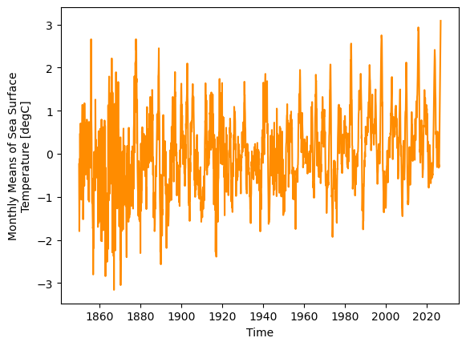
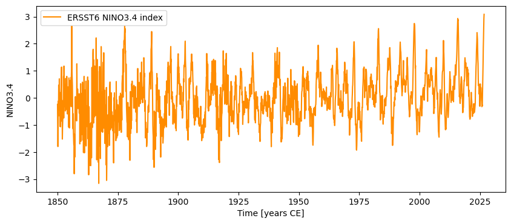
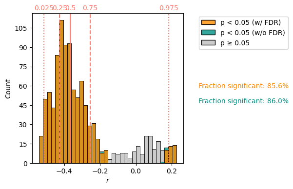

Correlation Analysis in Pyleoclim#
Preamble#
This tutorial has two parts, highlighting two important applications of correlation analysis to paleoclimatology.
The first tackles the comparison of age-uncertain records, and is inspired by a similar one in Pyleoclim’s sister package, GeoChronR.
The second shows how to compute correlations between a record and a gridded field, illustrative of the multiple comparisons (aka “Look Elsewhere”) effect.
We also show how the latest Pyleoclim version can apply different types of surrogates for significance testing, and compute different metrics of association, from the usual Pearson correlation to more exotic statistics like
Spearman’s \(\rho\) or Kendall’s \(\tau\), which sidestep the assumption of a linear relationship between series.
Goals:#
load and create age ensemble data
run correlation workflow on those ensembles, using various statistics and surrogates
interpret the results of these correlation tests, especially when multiple tests are carried out at once
go between
LiPD-formatted paleo data andXarraydatasets, usingpandasandPyleoclimas go-betweens
Reading Time:
10 minutes
Keywords#
Age ensembles, Surogates, multiple hypotheses, serial correlation, significance
Pre-requisites#
None. This tutorial assumes basic knowledge of Python. If you are not familiar with this coding language, check out this tutorial: http://linked.earth/LeapFROGS/.
Relevant Packages#
Pickle, Pyleoclim
Data Description#
Hulu Cave record: https://www.science.org/doi/10.1126/science.1064618
ERSSTv6: Huang et al, (2025)
Palmyra modern Sr/Ca data: Nurhati et al (2011)
Let’s import the packages needed for this tutorial:
%load_ext watermark
import pickle
import pyleoclim as pyleo
/Users/julieneg/Documents/GitHub/Pyleoclim_util/pyleoclim/core/ensembleseries.py:931: SyntaxWarning: invalid escape sequence '\%'
Label for the envelope. The default is '95\% CI'.
Age-uncertain Correlations#
This example compares two high-resolution paleoclimate records with quantifiable age uncertainties: the Hulu Cave speleothem record of Wang et al. (2001) and the GISP2 ice core record. Both measure stable oxygen isotopes (\(\delta^{18} \mathrm{O}\)), though these proxy systems have radically different interpretations, which are not relevant here.
On multi-millennial timescales, the two datasets display such similar features that the well-dated Hulu Cave record has been used to argue for atmospheric teleconnections between the regions and support the independent chronology of GISP2. In this example, we revisit this relation quantitatively and use their age models (one provided, one created using a built-in Pyleoclim function), to calculate the impact of age uncertainty on the correlation between these two iconic datasets.
First, let’s look at the Hulu Cave dataset from Wang et al. (2001), with age ensemble generates using BChron:
with open('../data/hulu_ensemble.pkl','rb') as handle:
Hulu = pickle.load(handle)
Hulu.label = 'Hulu Cave'
Hulu.value_name = r'$\delta^{18} \mathrm{O}$'
Hulu.value_unit = '‰'
Hulu = Hulu.convert_time_unit('ky BP')
Hulu.common_time().plot_envelope()
(<Figure size 1000x400 with 1 Axes>,
<Axes: xlabel='Age [ka]', ylabel='d18O [permil]'>)

Next we load GISP2, which actually ships with Pyleoclim (see this tutorial). Its original time unit is “years BP”, which we convert to “ky BP” (thousands of years before present) to harmonize with Hulu:
GISP2 = pyleo.utils.load_dataset('GISP2')
GISP2 = GISP2.convert_time_unit('ky BP')
GISP2.plot()
(<Figure size 1000x400 with 1 Axes>,
<Axes: xlabel='Age [ka]', ylabel='$\\delta^{18} \\mathrm{O}$ [‰]'>)

Create age ensemble#
Hulu already has an age ensemble, but GISP2 doesn’t. To generate a plausible one, we use a Pyleoclim function called random_time_axis to create a 1000-member EnsembleSeries object with time perturbations of \(\pm100y\) with a 2% probability:
nEns = 1000
n = len(GISP2.time)
slist = []
for _ in range(nEns):
pert = pyleo.utils.tsmodel.random_time_axis(n,
delta_t_dist='random_choice',
param =[[-0.1,0,0.1],[0.02,0.96,0.02]])
ts = GISP2.copy()
ts.time = GISP2.time + pert
slist.append(ts)
GISP2e = pyleo.EnsembleSeries(slist)
Notice how we specified parameters here: param =[[-0.1,0,0.1],[0.02,0.96,0.02]] means that the time increment perturbations (departures from 1), are rare and symmetric, being 0ky 96% of the time, and \(\pm0.1\)ky the remaining 4% of the time. Let us plot the result:
GISP2e.common_time().plot_envelope()
(<Figure size 1000x400 with 1 Axes>,
<Axes: xlabel='Age [ka]', ylabel='$\\delta^{18} \\mathrm{O}$ [‰]'>)

Correlating the medians#
Before delving into the ensembles, let’s extract their medians and explore their correlation, to showcase a few of Pyleoclim’s capabilities. The default measure of association is Pearson’s product-moment correlation, more commonly known as Pearson’s R. However, there are several ways of assessing the significance of the result. We use 3 here:
a Monte Carlo simulation using AR(1) surrogates.
a Monte Carlo simulation using phase-randomized surrogates
Effect of persistence#
Hulu_m = Hulu.common_time().quantiles(qs=[0.5]).series_list[0] # this turns it into a Series
GISP2_m = GISP2e.common_time().quantiles(qs=[0.5]).series_list[0] # this turns it into a Series
for method in ['built-in','ar1sim','phaseran',]:
corr_m = Hulu_m.correlation(GISP2_m,method=method,common_time_kwargs={})
print(corr_m)
statistic critical value p-value signif. (α: 0.05)
----------- ---------------- --------- -------------------
-0.390702 nan < 1e-12 True
Evaluating association on surrogate pairs: 100%|██████████| 1000/1000 [00:00<00:00, 7164.62it/s]
statistic critical value p-value signif. (α: 0.05)
----------- ---------------- --------- -------------------
-0.390702 -0.574789 0.23 False
Evaluating association on surrogate pairs: 100%|██████████| 1000/1000 [00:00<00:00, 7631.49it/s]
statistic critical value p-value signif. (α: 0.05)
----------- ---------------- --------- -------------------
-0.390702 -0.439807 0.09 False
Putting the two records on the same time axis#
An important step has taken place silently here, on which we would like to return for a moment. To correlate two timeseries, they must share a common time axis. Since Hulu and GISP2 were sampled at different times, their time axes do not line up.
You have a choice here:
do this yourself, and apply the
correlation()method to those series or;Pyleoclimcan handle this for you under the hood by placing both records on a common time axis with thecommon_time()method.
There are several defensible ways to perform this alignment, which you can control via common_time_kwargs. This is short for “keyword arguments for common_time()”, and is the mechanism whereby how you can pass settings to its underlying methods (interp(), gkernel(), bin()).
Rather than forcing the choice on you, Pyleoclim prefers to give you agency. However, for the sake of expediency, some defaults are set up: passing common_time_kwargs={} (as done in the cell above) means “yes, please align the records, using the default settings”. With these settings, Pyleoclim:
finds the period covered by both records, from the later of the two start dates to the earlier of the two end dates;
builds a new time axis over that period, with evenly spaced points whose spacing is the average spacing of the observations;
estimates each record’s value at every point of the new axis by linear interpolation: it draws a straight line between the two nearest observations and reads off the value at that time.
If you prefer another approach, you can say so. For instance, common_time_kwargs={'method': 'bin'} averages the observations that fall within regular time intervals (“bins”) instead of interpolating. The documentation lists all the options.
What if you leave out common_time_kwargs altogether? For now, Pyleoclim still interpolates, but it prints a warning; future versions will stop with an error and ask you to choose. All the correlations in the rest of this tutorial involve records with different time axes, so you will see common_time_kwargs={} throughout.
type(corr_m)
pyleoclim.core.corr.Corr
The result of these calculations is stored in a Corr object, which contains several things:
r(float), the statistic measuring associationr_crit(float), the critical value of this statistic (i.e. the threshold value that must be exceeded (in absolute value) to call this “significant”). This is provided as a convenience for some applications, and cannot be computed in all cases (e.g. thebuilt-inmethod)p(float), the p-value, which is used to decide whether the correlation is in any way remarkable (“significant”)signif, a boolean indicating whether significance was reached, at the indicated level (0.05 by default)
We see that the three methods return the same value \(r \approx -0.4\) but quite different assessments of the \(p\)-value:
the built-in test, which assumes that the data are Gaussian and IID, suggests a highly significant result, with a p-value less than \(10^{-13}\).
the test against both surrogates suggests the correlation is not significant at the 95% level.
This is a reminder of the importance of judiciously applying statistical tests in the paleo context. As recounted by Hu et al (2017), there are 3 major pitfalls for paleo-correlations. The first, which is here on full display, is that serial correlation (persistence) undermines the assumption that consecutive samples are independent, thereby radically reducing the number of degrees of freedom available to the test. This can often invalidate such tests entirely. Accordingly, Pyleoclim implements a modified version of the built-in test, which estimates the effective degrees of freedom \(n_\mathrm{eff}\) lost to serial correlation. This method is available as ttest, but in this case it would not work because it results in \(n_\mathrm{eff}<10\), which is too small for this test to make any sense (try it!).
Effect of nonlinearity#
Now we showcase how to apply a different statistic, for example, Spearman’s \(\rho\) and Kendall’s \(\tau\):
for method in ['built-in','ar1sim','phaseran']:
corr_s = Hulu_m.correlation(GISP2_m,statistic='spearmanr',method=method,common_time_kwargs={})
print(corr_s)
statistic critical value p-value signif. (α: 0.05)
----------- ---------------- --------- -------------------
-0.389562 nan < 1e-12 True
Evaluating association on surrogate pairs: 100%|██████████| 1000/1000 [00:00<00:00, 5946.43it/s]
statistic critical value p-value signif. (α: 0.05)
----------- ---------------- --------- -------------------
-0.389562 -0.58103 0.22 False
Evaluating association on surrogate pairs: 100%|██████████| 1000/1000 [00:00<00:00, 5971.36it/s]
statistic critical value p-value signif. (α: 0.05)
----------- ---------------- --------- -------------------
-0.389562 -0.424655 0.08 False
Same for Kendall’s \(\tau\):
for method in ['built-in','ar1sim','phaseran']:
corr_t = Hulu_m.correlation(GISP2_m,statistic='kendalltau',method=method,common_time_kwargs={})
print(corr_t)
statistic critical value p-value signif. (α: 0.05)
----------- ---------------- --------- -------------------
-0.257351 nan < 1e-11 True
Evaluating association on surrogate pairs: 100%|██████████| 1000/1000 [00:00<00:00, 5342.65it/s]
statistic critical value p-value signif. (α: 0.05)
----------- ---------------- --------- -------------------
-0.257351 -0.378786 0.21 False
Evaluating association on surrogate pairs: 100%|██████████| 1000/1000 [00:00<00:00, 5376.05it/s]
statistic critical value p-value signif. (α: 0.05)
----------- ---------------- --------- -------------------
-0.257351 -0.285806 0.08 False
We see that Spearman’s \(\rho\) yields results very close to Pearson’s \(r\) (the phase randomization test is now at the edge of significance), so nonlinearity is probably not a main concern. Quantitatively, Kendall’s \(\tau\) estimates a lower absolute correlation, but assessments of significance are the same as before: the built-in test suggests a highly significant correlation, a result contradicted by the surrogates. All in all, a reasonable investigator would dismiss this correlation between median age models as non significant.
Multiple Comparison#
We now tackle the multiple comparisons problem, which can create the appearance of significant results because, at the 5% level, 5% of tests will return a false positive, so if thousands of comparisons are carried out (as is the case here), then one expects that a few dozen of them will be identified as “significant” at that level (\(\alpha=0.05\)). A solution to this problem was worked out in 1995 as the false-discovery rate procedure (FDR), which is implemented in Pyleoclim.
The latter can carry out correlations between EnsembleSeries objects, and here the result has more features. This calculation, using 1000 surrogates for each of the 1000 age models, computes a million correlations, and therefore takes a few minutes:
corr_e = Hulu.correlation(GISP2e, method='phaseran',number=1000,common_time_kwargs={})
Looping over 1000 Series in the ensemble
100%|██████████| 1000/1000 [03:15<00:00, 5.11it/s]
corr_e.plot()
(<Figure size 400x400 with 1 Axes>, <Axes: xlabel='$r$', ylabel='Count'>)

type(corr_e)
pyleoclim.core.correns.CorrEns
Whereas the previous correlation results were stored in a Corr object, this one is stored in a CorrEns object. It contains very similar information to Corr, but the lists can be tedious to inspect in print, so a visual inspection via its plot() method (see figure above) is far more useful.
It shows that :
the vast majority of correlations between individual ensemble members are judged non-significant.
a subset of those (around 9%) are found significant. However, when accounting for the multiple comparisons problem via FDR, none of them are found significant.
This confirms what was found earlier using median age models. This is not always the case, as the median (or mean) is often a very poor summary of a dataset. When ensembles are available, it is always preferable to look at them in their entirety, something Pyleoclim makes practical.
Field Correlations#
Another example of multiple comparison arises when assessing correlations between a single series (e.g. a paleoclimate record, or an instrumental station) and an instrumental climate field. Here, we use as our record the coral Sr/Ca series (a proxy for sea-surface temperature) from Nurhati et al (2011). The data are from Palmyra Island in the tropical Pacific, at the edge of the NINO3.4 box (a popular measure of the state of El Niño Southern Oscillation). We compare it to the sea-surface temperature analysis of ERSSTv6 (Huang et al, 2025).
To do so we leverage the wonderful Xarray package to load the data directly from NCEI’s servers so they never have to be explicitly downloaded (aka “lazy-loading”). We also make use of pyLiPD and a few other packages.
from pylipd.lipd import LiPD
import xarray as xr
import matplotlib.pyplot as plt
import cartopy.crs as ccrs
import numpy as np
D = LiPD()
D.load('../data/Ocn-Palmyra.Nurhati.2011.lpd')
timeseries,df = D.get_timeseries(D.get_all_dataset_names(),to_dataframe=True)
df
Loading 1 LiPD files
100%|██████████| 1/1 [00:00<00:00, 46.96it/s]
Loaded..
Extracting timeseries from dataset: Ocn-Palmyra.Nurhati.2011 ...
| mode | time_id | archiveType | originalDataURL | googleMetadataWorksheet | pub1_author | pub1_title | pub1_url | pub1_urldate | pub1_institution | ... | paleoData_sensorGenus | paleoData_useInGlobalTemperatureAnalysis | paleoData_proxyObservationType | paleoData_proxy | paleoData_inCompilation | paleoData_ocean2kID | paleoData_pages2kID | paleoData_qCCertification | paleoData_iso2kUI | paleoData_interpretation | |
|---|---|---|---|---|---|---|---|---|---|---|---|---|---|---|---|---|---|---|---|---|---|
| 0 | paleoData | age | Coral | http://hurricane.ncdc.noaa.gov/pls/paleox/f?p=... | oax0htr | I.S. Nurhati | World Data Center for Paleoclimatology | [https://www.ncdc.noaa.gov/paleo/study/8609] | 2010.0 | World Data Center for Paleoclimatology | ... | NaN | NaN | NaN | NaN | NaN | NaN | NaN | NaN | NaN | NaN |
| 1 | paleoData | age | Coral | http://hurricane.ncdc.noaa.gov/pls/paleox/f?p=... | oax0htr | I.S. Nurhati | World Data Center for Paleoclimatology | [https://www.ncdc.noaa.gov/paleo/study/8609] | 2010.0 | World Data Center for Paleoclimatology | ... | Porites | False | d18O | d18O | NaN | NaN | NaN | NaN | NaN | NaN |
| 2 | paleoData | age | Coral | http://hurricane.ncdc.noaa.gov/pls/paleox/f?p=... | oax0htr | I.S. Nurhati | World Data Center for Paleoclimatology | [https://www.ncdc.noaa.gov/paleo/study/8609] | 2010.0 | World Data Center for Paleoclimatology | ... | NaN | NaN | NaN | NaN | NaN | NaN | NaN | NaN | NaN | NaN |
| 3 | paleoData | age | Coral | http://hurricane.ncdc.noaa.gov/pls/paleox/f?p=... | oax0htr | I.S. Nurhati | World Data Center for Paleoclimatology | [https://www.ncdc.noaa.gov/paleo/study/8609] | 2010.0 | World Data Center for Paleoclimatology | ... | Porites | True | Sr/Ca | Sr/Ca | Ocean2k_v1.0.0 | PacificNurhati2011 | Ocn_129 | MNE, NJA | CO11NUPM01BT1 | [{'scope': 'climate', 'variableDetail': 'sea@s... |
| 4 | paleoData | age | Coral | http://hurricane.ncdc.noaa.gov/pls/paleox/f?p=... | oax0htr | I.S. Nurhati | World Data Center for Paleoclimatology | [https://www.ncdc.noaa.gov/paleo/study/8609] | 2010.0 | World Data Center for Paleoclimatology | ... | Porites | False | d18O | d18O | NaN | NaN | NaN | MNE, NJA | CO11NUPM01B | [{'direction': 'negative', 'variableDetail': '... |
5 rows × 88 columns
Let’s put the Sr/Ca data into a GeoSeries object so we can easily plot it in space and time:
row = df[df['paleoData_variableName']=='Sr/Ca']
srca = pyleo.GeoSeries(
time=row['year'].values[0],
value=row['paleoData_values'].values[0],
lon = df['geo_meanLon'][0],
lat = df['geo_meanLat'][0],
archiveType = 'coral',
time_name = 'Time',
time_unit = 'years CE',
value_name = 'Sr/Ca',
value_unit = row['paleoData_units'].values[0],
label='Ocn-Palmyra.Nurhati.2011',
auto_time_params = False,
) # load only the Sr/Ca observations
srca.plot()
Time axis values sorted in ascending order
/Users/julieneg/Documents/GitHub/Pyleoclim_util/pyleoclim/core/geoseries.py:235: UserWarning: auto_time_params is not specified. Currently default behavior sets this to True, which might modify your supplied time metadata. Please set to False if you want a different behavior.
super().__init__(time, value, time_unit, time_name, value_name,
(<Figure size 1000x400 with 1 Axes>,
<Axes: xlabel='Time [years CE]', ylabel='Sr/Ca [mmol/mol]'>)

srca.map()
(<Figure size 1800x700 with 1 Axes>,
{'map': <GeoAxes: xlabel='lon', ylabel='lat'>})

Palmyra Island sits in the very central Pacific, and we expect to see large-scale correlations with SST data.
Next we load the ERSSTv6 dataset. Note that the actual dat are not being transferred over the network yet; all we are getting is a pointer towards a netCDF file on a NOAA THREDDS server. The real crunching will come later.
filepath = 'https://psl.noaa.gov/thredds/dodsC/Datasets/noaa.ersst.v6/sst.mnmean.nc'
# If the NOAA server is down or refuses the connection (e.g. 'NetCDF: Access failure'),
# use the local copy of the tropical Pacific data instead, by uncommenting the next line:
# filepath = '../data/ersstv6_tropical_pacific.nc'
ersstv6 = xr.open_dataset(filepath)
ersstv6
<xarray.Dataset> Size: 136MB
Dimensions: (time: 2122, nbnds: 2, lat: 89, lon: 180)
Coordinates:
* time (time) datetime64[ns] 17kB 1850-01-01 1850-02-01 ... 2026-10-01
* lat (lat) float32 356B 88.0 86.0 84.0 82.0 ... -84.0 -86.0 -88.0
* lon (lon) float32 720B 0.0 2.0 4.0 6.0 ... 352.0 354.0 356.0 358.0
Dimensions without coordinates: nbnds
Data variables:
time_bnds (time, nbnds) float64 34kB ...
sst (time, lat, lon) float32 136MB ...
Attributes: (12/41)
climatology: Climatology is based on 1971-2000 SST, X...
description: In situ data: ICOADS2.5 before 2007 and ...
keywords_vocabulary: NASA Global Change Master Directory (GCM...
keywords: Earth Science > Oceans > Ocean Temperatu...
instrument: Conventional thermometers
source_comment: SSTs were observed by conventional therm...
... ...
history: created 01/16/2025 by PSL using NCEI ERS...
References: https://www.ncdc.noaa.gov/data-access/ma...
summary: ERSSTv6 is developped based on v5, by re...
comments: SSTs were observed by conventional therm...
platform: Ship and Buoy SSTs from ICOADS R3.0.2 an...
DODS_EXTRA.Unlimited_Dimension: timeThe dataset has a \(2^\circ \times 2^\circ\) resolution, which means a lot of grid points. Let us select a relatively narrow part of the Tropical Pacific:
ersstv6_tp = ersstv6.sel(lat=slice(15, -15), lon=slice(140, 280))
ersstv6_tp
<xarray.Dataset> Size: 9MB
Dimensions: (time: 2122, nbnds: 2, lat: 15, lon: 71)
Coordinates:
* time (time) datetime64[ns] 17kB 1850-01-01 1850-02-01 ... 2026-10-01
* lat (lat) float32 60B 14.0 12.0 10.0 8.0 ... -8.0 -10.0 -12.0 -14.0
* lon (lon) float32 284B 140.0 142.0 144.0 146.0 ... 276.0 278.0 280.0
Dimensions without coordinates: nbnds
Data variables:
time_bnds (time, nbnds) float64 34kB ...
sst (time, lat, lon) float32 9MB ...
Attributes: (12/41)
climatology: Climatology is based on 1971-2000 SST, X...
description: In situ data: ICOADS2.5 before 2007 and ...
keywords_vocabulary: NASA Global Change Master Directory (GCM...
keywords: Earth Science > Oceans > Ocean Temperatu...
instrument: Conventional thermometers
source_comment: SSTs were observed by conventional therm...
... ...
history: created 01/16/2025 by PSL using NCEI ERS...
References: https://www.ncdc.noaa.gov/data-access/ma...
summary: ERSSTv6 is developped based on v5, by re...
comments: SSTs were observed by conventional therm...
platform: Ship and Buoy SSTs from ICOADS R3.0.2 an...
DODS_EXTRA.Unlimited_Dimension: timeLet’s plot the latest SST available in that domain:
fig = plt.figure(figsize=(12, 6))
ax = plt.axes(projection=ccrs.Robinson(central_longitude=180))
ax.coastlines()
ax.gridlines()
ersstv6_tp.sst.isel(time=-1).plot(
ax=ax, transform=ccrs.PlateCarree(), vmin=16, vmax=30, cmap='coolwarm'
)
<cartopy.mpl.geocollection.GeoQuadMesh at 0x33f18ab10>

Let’s remove the monthly-mean seasonal cycle (aka the “climatology”) so that SST is expressed as anomalies around this cycle, as is the norm:
gb = ersstv6_tp.sst.groupby('time.month')
ersstv6_tpa = gb - gb.mean(dim='time')
Now extract the NINO3.4 index (a weighted average is involved, though it matters little so close to the equator because the weights are very close to unity):
nino34_anom = ersstv6_tpa.sel(lat=slice(5, -5), lon=slice(190, 240))
weights = np.cos(np.deg2rad(nino34_anom.lat))
nino34 = nino34_anom.weighted(weights).mean(dim=['lat', 'lon'])
nino34.plot()
[<matplotlib.lines.Line2D at 0x366153500>]

Now let’s leverage Pyleoclim’s integration with pandas to turn this into a Pyleoclim Series object. For this, we also leverage the fact that Xarray is pandas-based.
metadata = {
'time_unit': 'years CE',
'time_name': 'Time',
'value_name': 'NINO3.4',
'label': 'ERSST6 NINO3.4 index',
'archiveType': 'Instrumental',
'importedFrom': 'NOAA/NCEI',
}
NINO34 = pyleo.Series.from_pandas(nino34.to_pandas(),metadata)
NINO34.plot()
/Users/julieneg/Documents/GitHub/Pyleoclim_util/pyleoclim/core/series.py:458: UserWarning: The index dtype was converted to datetime64[s]
warnings.warn("The index dtype was converted to datetime64[s]")
(<Figure size 1000x400 with 1 Axes>,
<Axes: xlabel='Time [years CE]', ylabel='NINO3.4'>)

Notice how easy that was! One line of code is all it took to export the nino34 Xarray DataArray object as a pandas Series, and import it as a Pyleoclim Series (which is nothing more than a pandas Series with a little extra metadata to make life easier). Now we can deploy our correlation arsenal again, this time throwing in the T-test modified for the effects of serial correlation (ttest):
for method in ['built-in','ttest','ar1sim','phaseran']:
corr_n = srca.correlation(NINO34,method=method,common_time_kwargs={})
print(corr_n)
statistic critical value p-value signif. (α: 0.05)
----------- ---------------- --------- -------------------
-0.472016 nan < 1e-74 True
statistic critical value p-value signif. (α: 0.05)
----------- ---------------- --------- -------------------
-0.472016 -0.10814 < 1e-4 True
Evaluating association on surrogate pairs: 100%|██████████| 1000/1000 [00:00<00:00, 7054.57it/s]
statistic critical value p-value signif. (α: 0.05)
----------- ---------------- --------- -------------------
-0.472016 -0.16172 < 1e-6 True
Evaluating association on surrogate pairs: 100%|██████████| 1000/1000 [00:00<00:00, 7105.86it/s]
statistic critical value p-value signif. (α: 0.05)
----------- ---------------- --------- -------------------
-0.472016 -0.138142 < 1e-6 True
In this case, we see a correlation similar to what was observed between the Hulu and GISP2 records, but it appears highly significant no matter what test is used.
The difference between the first two tests is instructive: we see how without accounting for serial correlation the p-value is an infinitesimal \(<10^{-74}\), meaning basically impossible. Once serial correlation is accounted for (admittedly crudely) in the modified T-test, we get a p-value near \(10^{-4}\), which is quite a bit more conservative than those estimated with the Monte Carlo simulations (ar1sim,phaseran) near \(10^{-6}\). Notably, the critical value of the statistic is comparable for all methods that calculate it.
We now wish to carry out a similar analysis over the SST grid, so we write a simple loop. For computational convenience, we restrict ourselves to the T-test, which requires no Monte Carlo simulations. Notice how we use the same pandas trick as before as a cross-walk between xarray and Pyleoclim.
nlon = ersstv6_tpa.lon.size
nlat = ersstv6_tpa.lat.size
metadata = {
'time_unit': 'years CE',
'time_name': 'Time',
'value_name': 'SST',
'label': 'ERSST6 local SST',
'archiveType': 'Instrumental',
'importedFrom': 'NOAA/NCEI',
}
series_list = []
for ji in range(nlon):
metadata['lon'] = ersstv6_tpa.lon.values[ji]
for jj in range(nlat):
local_sst = ersstv6_tpa.isel(lon=ji,lat=jj)
# check for land points
if ~np.isnan(local_sst.values.mean()):
metadata['lat'] = ersstv6_tpa.lat.values[jj]
series = pyleo.GeoSeries.from_pandas(local_sst.to_pandas(),metadata)
series_list.append(series)
print(len(series_list))
sst_ms = pyleo.MultipleGeoSeries(series_list)
1051
There over 1000 series in this collection, but the syntax is the same: we simply apply the correlation() method, and plot the result as we did for the Hulu and GISP2 ensemble correlation above:
corr_f = sst_ms.correlation(srca,method='ttest',common_time_kwargs={})
corr_f.plot()
Looping over 1051 Series in collection
100%|██████████| 1051/1051 [01:31<00:00, 11.49it/s]
(<Figure size 400x400 with 1 Axes>, <Axes: xlabel='$r$', ylabel='Count'>)

We see a bimodal distribution, with correlations close to 0 rejected as insignificant. In this case, the False Discovery Rate correction is very small, only changing the number of gridpoints significantly correlated to the Palmyra Sr/Ca record from 86% to 85.6%. In other cases, it may be very large (see Hu et al (2017)).
Takeaways#
pyleoclimallows to easily compute correlations between series with different time axes (including different resolutions).pyleoclimassesses significance with 3 different methods that are meant to guard against the deleterious effects of persistence, thereby lowering the risk of spurious correlations and p-hacking.pyleoclimallows to compute correlations between a series and a collection of series, e.g. coming from a gridded field, addressing the Multiple Hypothesis Problem with the False Discovery Rate.pyleoclimallows to compute correlations between, and within,MultipleSeriesandEnsembleSeriesobject, using those same tools.
Acknowledgments#
Project Pythia for this notebook on xarray manipulations
%watermark -n -u -v -iv -w
Last updated: Mon, 16 Nov 2026
Python implementation: CPython
Python version : 3.12.13
IPython version : 9.10.0
IPython : 9.10.0
cartopy : 0.25.0
json : 2.0.9
matplotlib: 3.10.8
numpy : 2.4.2
pyleoclim : 1.3.2b0
pylipd : 1.5.3
xarray : 2026.2.0
Watermark: 2.6.0